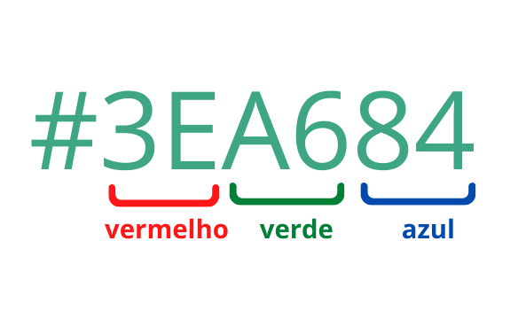

Cascading Style Sheets
Cascading Style Sheets (CSS) é uma linguagem de estilos, que ao ser incorporada ao HTML permite alterar a aparência gráfica dos componentes da página. Atualmente o CSS está na versão 3, porém foi apresentada em 1994.
Podemos classificar os recursos da linguagem em diferentes módulos, cada qual com finalidade específica.
- Selectors
- Box Model
- Backgrounds
- Image Values and Replaced Content
- Text Effects
- 2D Transformations
- 3D Transformations
- Animations
- Multiple Column Layout
- User Interface
<div style="position:relative;height:220px;margin-top:50px;">
<div style="opacity:0.5;position:absolute;left:50px;top:-30px;width:300px;height:150px;background-color:#40B3DF"></div>
<div class="w3-theme" style="opacity:0.3;position:absolute;left:120px;top:20px;width:100px;height:170px;"></div>
<div style="margin-top:30px;width:360px;height:130px;padding:20px;border-radius:10px;border:10px solid #EE872A;font-size:120%;">
<h1>CSS = Styles and Colors</h1>
<div style="letter-spacing:12px;font-size:15px;position:relative;left:25px;top:10px;">Manipulate Text</div>
<div style="color:#40B3DF;letter-spacing:12px;font-size:15px;position:relative;left:25px;top:20px;">Colors,
<span style="background-color:#B4009E;color:#ffffff;"> Boxes</span></div>
</div>
</div>
CSS = Styles and Colors
Sintaxe
A linguagem CSS3 fornece, basicamente, um vasto conjunto de propriedades de estilo, funções e outras construções que podemos utilizar para modificar algum aspecto da aparência dos elementos HTML5.
Uma propriedade de estilo é definida por um nome e um valor. Por exemplo, se desejamos justificar determinado texto, podemos escrever o seguinte trecho de código:
seletor ┌─┴─┐ p { text-align: justify; └────┬────┘ └──┬──┘ propriedade valor }
A propriedade chama-se text-align e seu valor foi configurado para justify, o qual indica que o texto deve ser
justificado. Ao final, é necessário colocar ;. Um mesmo elemento pode receber diversas configurações de estilo
através do uso de diferentes propriedades.
O seletor indica em qual ou quais elementos esse estilo deve ser aplicado.
Incorporar
A incorporação de código CSS3 a documentos HTML5 pode ser realizada de três formas distintas:
- arquivo externo
- elemento<style>
- atributo style (inline)
Inline
Estilos inline são aqueles que acompanham o elemento, sendo definidos no atributo style. Devem ser utilizados com
cautela, pois são difíceis de alterar quando aparecem em grande quantidade no documento. É o caso do elemento h1
do documento apresentado na sequência. Perceba que o estilo se aplica somente ao elemento.
Elemento Style
Quando utilizamos o elemento <style> temos maior flexibilidade na aplicação dos estilos, diferentemente do modo
inline, podemos aplicar o mesmo estilo a vários elementos do documento por meio de regras. O elemento <style> deve
ser adicionado dentro de <head> e todas as regras de estilo devem ser escritas como conteúdo do elemento.
<!DOCTYPE html>
<html>
<head>
<title>Minha primeira página Web</title>
<style>
body {
background-color: rgb(159, 169, 170);
}
h1, h2, h3, h4, h5, h6 {
color: black;
text-transform: uppercase;
}
</style>
</head>
</html>
Arquivo Externo
A terceira forma, em que utilizamos a vinculação de um arquivo com regras de estilo ao documento é a mais utilizada. Isso porque, quando pensamos em um site, devemos considerar a existência de muitos documentos e, todos eles compartilhamento da mesma apresentação. Logo, ao deixarmos as regras de estilo em um único local, podemos facilmente compartilhá-las em todos os documentos sem a necessidade de repetir código.
Para realizar a vinculação de um arquivo CSS ao documento devemos utilizar a tag <link>, que também deve estar
na <head>.
<!DOCTYPE html>
<html>
<head>
<meta charset="utf8" />
<title>Minha primeira página Web</title>
<link href="estilos.css" rel="stylesheet"/>
</head>
</html>
Ordem de Relevância
prioridade
Em caso de mais de uma forma ser utilizada simultaneamente, a prioridade fica com as propriedades inline, seguidas
daquelas definidas para o documento na tag <style> e, por último, as regras oriundas dos arquivos incorporados via
<link>.
- Estilos definidos
inline - Estilos definidos na página
<style> - Estilos definidos em arquivos externos
<link>
Seletores
Seletores são parte de uma regra de estilo. Sua função é orientar o navegador, por meio de um padrão de pesquisa, a encontrar os elementos que devem receber o estilo no documento
A regra acima tem como seletor p, indicando que todos os elementos do tipo parágrafo do documento devem receber
as propriedades de estilo definidas. Cada par de propriedade:valor corresponde a uma declaração. Perceba que toda
declaração finaliza com um ; e que as declarações ficam envolvidas entre chaves {}.
Universal
Todo elemento da página irá receber o estilo. Utilizamos * como seletor.
Elemento
Especificamos o nome dos elementos HTML que devem receber o estilo no seletor.
Id
Todo elemento HTML possui um atributo chamado id. Este atributo é utilizado para identificar de forma única um elemento
no documento. Isso significa que dois elementos não podem compartilhar o mesmo valor em id. No CSS, podemos especificar
um seletor para valores de id utilizando o caractere # acompanhado do valor de id correspondente.
Classe
Outro atributo global de elementos do HTML5 chama-se class. Diferentemente de id, diferentes elementos podem
compartilhar do mesmo valor em class e, além disso, vários valores são aceitos, deixando-se um espaço entre eles.
Seletores baseados em classe são amplamente utilizados. Sua construção requer o uso do caractere ponto . acompanhado
do nome da classe.
Podemos deixar o seletor mais específico, associando com um seletor de elemento, como em p.teste. A interpretação,
neste caso, é todo parágrafo que contém a classe teste.
Descendentes
Utilizamos este tipo de seletor para aplicar estilos a elementos com base em seus elementos "pai". Podemos selecionar,
por exemplo, todos os parágrafos (<p>) que são descendentes de artigos (<article>), desconsiderando os demais.
Observe que este seletor considera descendentes diretos e indiretos. Para ser mais restritivo e considerar somente
elementos que são "filhos" diretos, devemos utilizar o símbolo >, conforme o exemplo a seguir:
Elementos irmãos
São seletores que consideram elementos de mesmo nível ("irmãos", pois são filhos do mesmo "pai"). Para aplicar um
estilo específico para o primeiro parágrafo (<p>) que segue um título de segundo nível (<h2>),
poderíamos utilizar o operador + que indica adjacência:
Se a adjacência não for necessária, apenas a idéia de ser "irmão", utilizamos o operador ~:
Atributos
São seletores utilizados para selecionar elementos que contenham um atributo específico sua definição.
a[href] {
font-family: 'Roboto', sans-serif;
}
input[type="text"] {
background-color: yellow;
}
a[target="_blank"] {
background-color: yellow;
}
| Seletor | Exemplo | Descrição |
|---|---|---|
[attribute] |
[target] |
Seleciona todos os elementos com um atributo de destino |
[attribute=value] |
[target="_blank"] |
Seleciona todos os elementos com destino="_blank" |
[attribute~=value] |
[title~="flower"] |
Seleciona todos os elementos com um atributo title que contém uma lista de palavras separadas por espaços, uma das quais é "flor" |
[attribute^=value] |
a[href^="https"] |
Seleciona todos os elementos <a> com um valor de atributo href começando com "https" |
[attribute$=value] |
a[href$=".pdf"] |
Seleciona todos os elementos <a> com um valor de atributo href terminando com ".pdf" |
[attribute*=value] |
a[href*="w3schools"] |
Seleciona todos os elementos <a> com um valor de atributo href contendo a substring "w3schools" |
Pseudo-Elementos
São seletores que permitem estilizar partes de um elemento e não sua integralidade. Por exemplo, podemos estilizar somente a primeira linha de um parágrafo através da regra a seguir.
Observe que, para todo e qualquer pseudo-elemento, devemos utilizar a sintaxe a seguir (usar ::):
Para primeira linha:
Para primeira letra
| Seletor | Exemplo | Descrição |
|---|---|---|
::after |
p::after |
Insira algo após o conteúdo de cada elemento <p> |
::before |
p::before |
Insira algo antes do conteúdo de cada elemento <p> |
::first-letter |
p::first-letter |
Seleciona a primeira letra de cada elemento <p> |
::first-line |
p::first-line |
Seleciona a primeira linha de cada elemento <p> |
::marker |
::marker |
Seleciona os marcadores dos itens da lista |
::selection |
p::selection |
Seleciona a parte de um elemento que é selecionado por um usuário |
Pseudo-Classes
Pseudo-classes são utilizadas para selecionar elementos com base em algum estado específico
Observe que, para toda e qualquer pseudo-classe, devemos utilizar a sintaxe a seguir (usar :)
O seletor abaixo modifica a cor de todos os links visitados:
| Seletor | Exemplo | Descrição |
|---|---|---|
:active |
a:active |
Selects the active link |
:disabled |
input:disabled |
Selects every disabled <input> element |
:empty |
p:empty |
Selects every <p> element that has no children |
:enabled |
input:enabled |
Selects every enabled <input> element |
:hover |
a:hover |
Selects links on mouse over |
:link |
a:link |
Selects all unvisited links |
Seletor por negação
Seleciona todos os elementos que não atendem a condição especificada.
Prioridade por ordem
prioridade
O estilo definido com id possuí prioridade, seguido pela classe e por último por elemento.
- Estilo definido com
id=#page { background-color: grey; } - Estilo definido com
class.page { background-color: blue; } - Estilo definido com
elementobody { background-color: red; }
Unidades de medida absolutas
As medidas absolutas, como pixels (px), polegadas (in), centímetros (cm), etc., são especificadas com um valor
fixo que não é afetado pelo ambiente ou contexto da página. Elas fornecem uma precisão absoluta e são consistentes
independentemente do dispositivo ou configuração de exibição.
Isso significa que medidas absolutas resultam em elementos com tamanhos fixos e invariáveis, independentemente do tamanho da tela ou do navegador em que estão sendo exibidos. De modo geral, tal característica impõe problemas de adaptação em dispositivos com tamanhos de tela variados, especialmente em dispositivos móveis ou em layouts responsivos.
No CSS3 temos a disposição diversas medidas absolutas, contudo a que utilizamos com maior frequência é o
pixel (px).
Unidades de medida relativas
Diferentemente das absolutas, as medidas relativas, como % (porcentagem), em (relativo ao elemento pai),
rem (relativo ao elemento raiz), vw (viewport width), vh (viewport height), etc...
são dimensionadas com base em algum aspecto do ambiente de layout, como o tamanho da fonte, largura da tela ou
tamanho do elemento pai.
São muito utilizadas, pois elas se ajustam dinamicamente conforme o contexto, proporcionando uma melhor adaptação a diferentes dispositivos e ambientes de visualização. São fundamentais para criar layouts responsivos, onde os elementos se ajustam de acordo com o tamanho da tela, garantindo uma experiência consistente em dispositivos variados.
Deste modo, ao usar medidas relativas, é possível manter proporções consistentes entre elementos em diferentes partes do layout, pois eles são dimensionados proporcionalmente em relação ao ambiente de exibição.
Porcentagem (%)
Unidade relativa as proporções do elemento pai.
Em (em)
Unidade relativa ao tamanho da fonte do elemento pai.
Rem (rem)
REM define o tamanho relativo à fonte do elemento raiz (normalmente o elemento <html>).
Viewport Width (vw) e Viewport Height (vh)
Referem-se à largura e altura da janela de visualização do navegador, respectivamente.
Viewport Minimum (vmin) e Viewport Maximum (vmax)
Referem-se à menor ou maior dimensão da janela de visualização do navegador (largura ou altura), respectivamente.
Cores
Cores são um dos recursos mais importantes da linguagem CSS. Várias propriedades de estilo as utilizam, como àquelas que modificam bordas, preenchimento de fundo, texto e sombras, por exemplo.
Temos a disposição grande variedade de cores (mais de 16 milhões) e podemos especificá-las de várias formas. A mais simples é através do nome da cor, se a mesma constar no rol de cores suportadas pelo navegador e/ou predefinidas na especificação do CSS3. Embora simples, esta não costuma ser a forma mais adequada para definir valor de cor.
As outras opções que temos são código hexadecimal e as funções rgb, rgba, hsl e hlsa. Dentre todos, o código hexadecimal é a opção mais comum, correspondendo a um conjunto de 6 caracteres iniciado com o símbolo #. Estes caracteres representam a quantidade de vermelho, verde e azul que irá compor a cor final.
Cada canal de cor pode receber valores entre 00 (sem cor) a ff (cor cheia). Logo, o código #000000 é branco,
enquanto que #ffffff indica a cor preta. Já para as funções rgb e rgba, a quantidade de cor de cada canal é definida
no intervalo 0 e 255, no caso da rgba, um último valor entre 0.0 e 1.0 indicando a transparência aplicada.

body {
background-color: #000010;
}
.artigo {
background-color: rgb(200,240,255);
}
.secao {
background-color: rgba(100,55,36,0.5);
}
O outro modelo de cores suportado chama-se HSL (Hue-Saturation-Lightness), especificado por meio das funções hsl e
hlsa. Novamente a função terminada com a permite especificar o canal alpha para transparência.
| Cor | Nome | Hex Code | RGB Code | Cor | Nome | Hex Code | RGB Code |
|---|---|---|---|---|---|---|---|
| White | #FFFFFF | rgb(255, 255, 255) | Lime | #00FF00 | rgb(0, 255, 0) | ||
| Silver | #C0C0C0 | rgb(192, 192, 192) | Green | #008000 | rgb(0, 128, 0) | ||
| Gray | #808080 | rgb(128, 128, 128) | Aqua | #00FFFF | rgb(0, 255, 255) | ||
| Black | #000000 | rgb(0, 0, 0) | Teal | #008080 | rgb(0, 128, 128) | ||
| Red | #FF0000 | rgb(255, 0, 0) | Blue | #0000FF | rgb(0, 0, 255) | ||
| Maroon | #800000 | rgb(128, 0, 0) | Navy | #000080 | rgb(0, 0, 128) | ||
| Yellow | #FFFF00 | rgb(255, 255, 0) | Fuchsia | #FF00FF | rgb(255, 0, 255) | ||
| Olive | #808000 | rgb(128, 128, 0) | Purple | #800080 | rgb(128, 0, 128) |
Fontes
A escolha de uma fonte é crucial para o sucesso de uma interface web, visto que está diretamente ligada à experiência de leitura do usuário.
As propriedades de estilo que o CSS3 nos fornece para manipularmos fontes são font-family, font-style, font-weight,
font-size, e font-variant, background-color e color.
Uma curiosidade é que fontes sans-serif são recomendadas para uso em telas.

Font Family
Especifica a família de fontes que o navegador deve utilizar para renderizar o texto. A propriedade aceita vários
valores separados por vírgula, indicando opções de fontes quando não for possível utilizar a anterior. Normalmente
finalizamos especificando uma das cinco famílias genérias de fonte disponíveis: serif, sans-serif, monospace,
coursive e fantasy.
A família genérica deve ser utilizada para contornar a possibilidade do usuário não ter disponível em seu navegador as outras famílias listadas. Logo, nestes casos, o navegador conseguirá preservar o padrão tipográfico com outra fonte semelhante disponível.
No CSS existem cinco font-family, que o navegador pode utilizar para renderizar o texto.
- Serif fontes têm um pequeno traço nas bordas de cada letra. Eles criam uma sensação de formalidade e elegância.
- Sans serif fontes têm linhas limpas (sem pequenos traços anexados). Eles criam um visual moderno e minimalista.
- Monospace fontes aqui todas as letras têm a mesma largura fixa. Eles criam uma aparência mecânica.
- Cursive fontes imitam a caligrafia humana.
- Fantasy fontes são fontes decorativas e divertidas.
| Serif | Times New Roman Georgia Garamond |
|---|---|
| Sans-serif | Arial Verdana Helvetica |
| Monospace | Courier New Lucida Console Monaco |
| Cursive | Brush Script MT Lucida Handwriting |
| Fantasy | Copperplate Papyrus |
Font Style
- normal - Texto normal
- italic - Texto itálico
- oblique - Texto levemente inclinado
Font Weight
Define o peso (intensidade de negrito) da fonte. Os valores podem ser normal, bold, bolder, lighter, 100,
200, 300, 400, 500, 600, 700, 800, 900 e inherit. Os valores numéricos indicam uma graduação de negrito.
O valor 400 equivale a normal enquanto o valor 700 é equivalente a bold.
Os valores bolder e lighter aplicam-se em relação ao peso herdado do ancestral, enquanto normal e bold aplicam-se em absoluto ao texto.
- normal - Texto normal
- bold - Texto bold
- bolder - Texto bolder
- lighter - Texto lighter
Font Variant
Indica se o texto deve ser exibido ou não considerando apenas caracteres maiúsculos, utilizando a propriedade
small-caps
Texto escrito normalmente
Texto em small caps
Font Size
Permite especificar o tamanho da fonte, a partir de medidas relativas, como percentual, em, rem, etc ou medidas absolutas como pixels.
16px
2rem
2em
Letter Spacing
Espaçamento entre letras
Word Spacing
Espaçamento entre palavras
Text Align
Alinhamento do texto pode ser left, right, center, justify.
Alinhamento left
Alinhamento center
Alinhamento right
Alinhamento justify
bla bla bla bla bla bla bla bla bla bla bla bla bla bla bla bla
bla bla bla bla bla bla bla bla bla bla bla bla bla bla bla bla
Text Decoration
Opções none, underline, overline, line-through, blink, underline dotted, underline overline #FF3028,
green wavy underline...
Texto underline
Texto underline
Texto line-through
Texto overline
Underline dotted
Underline wavy green
Text Transform
Opções none, capitalize, uppercase, lowercase
Texto Texto Texto
Texto Texto Texto
Texto Texto Texto
Google Fonts
Se não quiser usar nenhuma das fontes padrão em HTML, você pode usar o Google Fonts. Eles são de uso gratuito e têm mais de 1000 fontes para você escolher.
<link rel="stylesheet" href="
https://fonts.googleapis.com/css?family=Sofia
">
<style>
body {
font-family: "Sofia", sans-serif;
}
</style>
OTF, TTF, WOFF2
Existem três formatos principais de arquivos de fonte que aparecem quando você baixa uma tipografia para usar em uma página HTML, são eles TTF, OTF e WOFF/WOFF2. Eles representam basicamente a evolução histórica das fontes digitais até chegar ao padrão otimizado para a internet.
TTF
O formato TTF, chamado TrueType Font, é o mais antigo dos três e surgiu nos sistemas da Apple e depois foi adotado pela Microsoft. Ele foi pensado originalmente para computadores pessoais e impressão.
Por isso costuma gerar arquivos relativamente grandes. Os navegadores conseguem utilizá-lo sem problemas, o que faz dele uma solução prática para testes locais ou para projetos simples, porém não é adequado para produção na internet porque aumenta o tempo de carregamento da página.
Em CSS ele é declarado informando o tipo “truetype”, apontando para o arquivo .ttf que você colocou dentro do projeto.
OTF
O formato OTF, OpenType Font, apareceu depois como uma evolução do TTF criada pela Adobe em parceria com a Microsoft.
A principal diferença não é visual imediata, mas tipográfica: ele permite recursos avançados, como ligaturas automáticas, variações estilísticas e melhor controle de desenho das letras. Por isso designers costumam preferir OTF para material gráfico e layouts mais refinados. Apesar dessa qualidade superior, o arquivo continua pesado para a web, praticamente do mesmo tamanho de um TTF. Ou seja, funciona em HTML, mas também não é indicado quando a preocupação é desempenho.
WOFF e WOFF2
O formato WOFF e sua versão mais recente WOFF2 foram criados especificamente para a internet. Na prática, eles são um TTF ou OTF compactado para transmissão pela rede. O navegador descompacta automaticamente e renderiza a tipografia sem perda de qualidade.
O WOFF2 possui compressão ainda melhor que o WOFF tradicional, resultando em arquivos muito menores e carregamento mais rápido, tornando-se o padrão atual da web. Por isso sites profissionais normalmente usam primeiro o WOFF2 e mantêm WOFF ou TTF apenas como compatibilidade para navegadores antigos.
Exemplo
Faça download do arquivo e salve em uma pasta do projeto. Crie a pasta fonts por exemplo.
Em algum lugar do css declare a fonte com @font-face, se ela for do tipo ttf utilize o format("truetype") se for do tipo otf utilize format("opentype"), já woff e woff2 tem o formato da extensão do arquivo.
Depois você pode utilizar a fonte
| Formato | Tamanho | Qualidade | Web | Recomendação |
|---|---|---|---|---|
| TTF | Grande | Boa | Funciona | evitar em produção |
| OTF | Grande | Excelente | Funciona | evitar em produção |
| WOFF | Médio | Igual | Ótimo | fallback |
| WOFF2 | Pequeno | Igual | Excelente | use sempre |
Tabelas
Uma tabela em HTML serve para apresentar dados organizados em linhas e colunas. O HTML define apenas a estrutura, o CSS é responsável pela aparência e legibilidade.
Estrutura básica em HTML
<table>
<thead>
<tr>
<th>Nome</th>
<th>Curso</th>
<th>Nota</th>
</tr>
</thead>
<tbody>
<tr>
<td>Ana</td>
<td>Computação</td>
<td>9.5</td>
</tr>
<tr>
<td>Bruno</td>
<td>Sistemas</td>
<td>8.7</td>
</tr>
</tbody>
</table>
Sem CSS a tabela fica com aparência simples e pouco legível.
Bordas e espaçamento
Por padrão cada célula possui bordas separadas. A propriedade border-collapse une essas bordas.
Destacando o cabeçalho
Cabeçalhos precisam diferenciar-se do conteúdo.
Linhas alternadas (efeito zebra)
Melhora muito a leitura quando há muitos dados.
Efeito ao passar o mouse (hover)
Ajuda o usuário a localizar a linha que está lendo.
Alinhamento de conteúdo
Números costumam ser centralizados ou alinhados à direita.
Exemplo completo de tabela estilizada
table {
width: 100%;
border-collapse: collapse;
font-family: Arial, sans-serif;
}
th, td {
padding: 10px 12px;
border-bottom: 1px solid #ddd;
}
th {
background-color: #34495e;
color: white;
text-align: left;
}
tbody tr:nth-child(even) {
background-color: #f8f9fa;
}
tbody tr:hover {
background-color: #e8f4ff;
}
td:last-child {
text-align: center;
font-weight: bold;
}
Tabelas responsivas
Tabelas são largas e não cabem bem em telas pequenas, uma solução simples é permitir rolagem horizontal.
<table id="customers">
<tr>
<th>Company</th>
<th>Contact</th>
<th>Country</th>
</tr>
<tr>
<td>Alfreds Futterkiste</td>
<td>Maria Anders</td>
<td>Germany</td>
</tr>
<tr>
<td>Berglunds snabbköp</td>
<td>Christina Berglund</td>
<td>Sweden</td>
</tr>
</table>
#customers {
font-family: Arial, Helvetica, sans-serif;
border-collapse: collapse;
width: 100%;
}
#customers td, #customers th {
border: 1px solid #ddd;
padding: 8px;
}
#customers tr:nth-child(even){
background-color: #f2f2f2;}
#customers tr:hover {
background-color: #ddd;}
#customers th {
padding-top: 12px;
padding-bottom: 12px;
text-align: left;
background-color: #04AA6D;
color: white;}
Box model
O modelo de caixa CSS é um conceito fundamental no desenvolvimento web que determina como os elementos HTML são exibidos e posicionados em uma página web. Essencialmente, ele divide cada elemento em uma caixa retangular com quatro componentes principais:
-
Conteúdo(content): Esta é a área central onde reside o conteúdo real do elemento, como texto, imagens ou formulários. Você pode estilizar o conteúdo com propriedades como cor de fundo ou estilos de fonte.
-
Preenchimento(padding): Esta é uma área transparente que adiciona espaço ao redor do conteúdo. O preenchimento cria um buffer entre o conteúdo e a borda.
- Borda(border): Esta é a linha externa decorativa que envolve o conteúdo e o preenchimento. Você pode controlar o estilo da borda (sólida, tracejada, pontilhada), espessura e cor.
- Margem(margin): É a área transparente fora da borda que cria um espaçamento entre o elemento e os demais elementos da página. As margens permitem melhor organização e capacidade de resposta nos layouts.
O modelo de caixa CSS é essencialmente uma caixa que envolve cada elemento HTML. Consiste em: bordas, preenchimento, margens e o conteúdo real.
A largura total de um elemento(tew) usamos
320px (width of content area)
+ 20px (left padding + right padding)
+ 10px (left border + right border)
= 350px (total element width)
Para calcular a altura total do elemento(tel) usamos
50px (height of content area)
+ 20px (top padding + bottom padding)
+ 10px (top border + bottom border)
= 80px (total height)
Posicionamento
O posicionamento CSS refere-se a como você controla o posicionamento dos elementos em uma página da web, independentemente do fluxo normal do documento. Por padrão, os elementos aparecem um após o outro na ordem em que são escritos no código HTML.
Estático - static
Este é o posicionamento padrão para todos os elementos. Os elementos são posicionados de acordo com o fluxo normal do documento, o que significa que aparecem um após o outro na ordem em que são escritos no código HTML.
Relativo - relative
Elementos com posicionamento relativo permanecem em sua posição normal no fluxo, mas você pode deslocá-los
usando propriedades como top, right, bottom, e left. Estas propriedades movem o elemento em relação à
sua posição original sem afetar o layout de outros elementos.
Absoluto - absolute
Os elementos posicionados de forma absoluta são removidos do fluxo normal do documento e posicionados
em relação ao seu ancestral posicionado mais próximo (geralmente um elemento pai com posicionamento relativo ou
absoluto, ou a janela de visualização se nenhum ancestral estiver posicionado). Sua posição é determinada usando as
propriedades top, right, bottom, e left em relação ao bloco que o contém.
div.absolute {
position: absolute;
top: 80px;
right: 0;
width: 200px;
height: 100px;
border: 3px solid #73AD21;
}
Fixo - fixed
Os elementos posicionados fixos são semelhantes aos elementos posicionados de forma absoluta, mas são posicionados em relação à janela de visualização e não ao bloco que os contém. Isso significa que eles permanecem no lugar mesmo quando a página é rolada. O posicionamento fixo é útil para elementos que você deseja que permaneçam visíveis na tela o tempo todo, como barras de navegação ou menus laterais.
Grudento - stick:
O posicionamento stick combina aspectos de posicionamento relativo e fixo. Os elementos com posicionamento stick são inicialmente posicionados em relação à sua posição normal no fluxo, mas aderem à borda do bloco que os contém quando rolados além de um determinado ponto. O posicionamento stick é útil para elementos que você deseja que permaneçam visíveis até que sejam rolados, como cabeçalhos de coluna em uma tabela.
div.sticky {
position: -webkit-sticky;
position: sticky;
top: 0;
padding: 5px;
background-color: #cae8ca;
border: 2px solid #4CAF50;
}
Display
A propriedade display especifica como o comportamento exibição do elemento. Dentre os possíveis comportamentos estão.
display |
Descrição |
|---|---|
inline: |
Exibe um elemento como um elemento embutido (como <span>). Quaisquer propriedades de altura e largura não terão efeito. |
block: |
Exibe um elemento como um elemento de bloco (como <p>). Ele começa em uma nova linha e ocupa toda a largura |
contents: |
Faz o contêiner desaparecer, tornando os elementos filhos filhos do elemento no próximo nível acima no DOM |
flex: |
Exibe um elemento como um flex container em nível de bloco |
grid: |
Exibe um elemento como um bloco- contêiner de grade de nível |
none: |
Remove o elemento completamente do DOM |
Flexbox
Flexbox, também conhecido como CSS Flexible Box Layout, é um modelo amplamente utilizado para criar layouts
em páginas da web. Oferece uma maneira mais eficiente de organizar e distribuir elementos em um container,
especialmente quando se trata de design responsivo e elementos com dimensões desconhecidas ou dinâmicas.
O Flexbox funciona estabelecendo um elemento contêiner utilizando display: flex que abriga elementos filhos (flex items).
Esses itens flexíveis são dispostos ao longo de um único eixo (uma linha ou coluna), com propriedades
controlando seu alinhamento, distribuição de espaço e comportamento de redimensionamento.
- Flexibilidade: organize facilmente os elementos horizontal ou verticalmente e ajuste seu tamanho com base no espaço disponível.
- Capacidade de resposta: os layouts Flexbox se adaptam bem a diferentes tamanhos de tela, tornando suas páginas da web responsivas.
- Alinhamento: controle preciso sobre como os elementos são alinhados dentro do contêiner, tanto horizontal quanto verticalmente.
- Espaçamento: Gerencie a distribuição do espaço entre os elementos, permitindo espaços uniformes ou alocação flexível.
Para pensar no flex-box, podemos imaginar que num contêiner os elementos vão ser posicionados
em eixos cross e main.

Um elemento que recebe a propriedade display: flex; é chamado de flex container. E pode receber várias outras
definições.
Dentre elas temos:
flex-direction
A direção onde os elementos vão ser alinhados é a row da esquerda para a direita e de cima
para baixo, mas podemos alterar o comportamento para column utilizando a propriedade
flex-direction: column;
flex-wrap
Por padrão, os flex items vão todos tentar se encaixar em uma só linha, usando flex-wrappodemos permitir
que os ítens quebrem para uma linha seguinte conforme for necessário.
nowrap(padrão): todos os flex items ficarão em uma só linhawrap: os flex items vão quebrar em múltiplas linhas, de cima para baixowrap-reverse: os flex items vão quebrar em múltiplas linhas de baixo para cima
flex-flow
A propriedade flex-flow é uma propriedade shorthand (uma mesma declaração inclui vários valores relacionados a mais
de uma propriedade) que inclui flex-direction e flex-wrap. E determina quais serão os eixos pricipal e transversal do
container. O valor padrão é row nowrap.
justify-content
Podemos alinhar os elementos dentro do container na direção do eixo principal utilizando justify-content;
flex-start
Alinha da esquerda para a direita no main axis.
flex-end
Alinha da direita para a esquerda no main axis.
center
Alinha os elementos no centro do main axis.
space-between
Alinha os elementos deixando espaços iguais entre eles main axis.
space-around
Alinha os elementos deixando um espaço tanto antes quando depois do elemento.
space-evenly
Alinha os elementos deixando um espaço igual entre todos os elementos
Também existem duas palavras-chave adicionais que você pode usar em conjunto com estes valores: safe e unsafe.
Safe garante que, independente da forma que você faça esse tipo de posicionamento, não seja possível "empurrar" um
elemento e fazer com que ele seja renderizado para fora da tela (por exemplo, acima do topo), de uma forma que faça
com que o conteúdo seja impossível de movimentar com a rolagem da tela (o CSS chama isso de "perda de dados").
align-items
E também podemos alinhar os elementos dentro do container na direção do cross-axis utilizando align-items.
flex-start
flex-end
center
- stretch (padrão): estica os ítens para preencher o container, respeitando o min-width/max-width).
- flex-start/ start / self-start: ítens são posicionados no início do eixo transversal. A diferença entre eles é sutil e diz respeito às regras de flex-direction ou writing-mode.
- center: ítens são centralizados no eixo transversal.
- baseline: ítens são alinhados de acordo com suas baselines.
flex-item
Propriedades que podem ser adicionadas a um item dentro de um flex-container.
flex-grow
Utilizado para fazer um flex-item "crescer" se houver espaço disponível.
flex-basis
Server para sobrescrever o valor de width de um elemento.
flex-shrink
Determina o quanto um elemento vai "encolher" para comportar mais elementos. Se definido como 0, o elemento não vai ser alterado.
flex
Usado para particionar o container e utilizar o espaço entre os elementos.
align-self
Essa propriedade sobrescreve o valor do align-item do flex-container apenas para esse flex-item.
order
Modifica a ordem onde um elemento vai aparecer, recebendo uma unidade como parâmetro. O valor default para cada
flex-item é 0.
A utilização dessa propriedade não é recomendada, pois altera a ordem de renderização de forma arbitrária
https://developer.mozilla.org/en-US/docs/Learn/CSS
https://diegolusa.github.io/web
https://dev.to/r4h33m/cmyk-and-rgb-hsv-and-hsl-introducing-the-chromatic-compendium-1d7
https://htmlcolorcodes.com/
https://www.color-hex.com/
https://developer.mozilla.org/pt-BR/docs/Web/CSS/font-family
https://www.w3schools.com/csSref/default.asp
https://www.tutorialrepublic.com/css-tutorial
https://www.nngroup.com/articles/serif-vs-sans-serif-fonts-hd-screens/#toc-screen-typography-for-online-reading-1
https://developer.mozilla.org/en-US/docs/Learn/CSS/CSS_layout/Flexbox
https://www.w3schools.com/cssref/playdemo.php?filename=playcss_display&preval=inline
https://css-tricks.com/snippets/css/a-guide-to-flexbox/
https://www.w3schools.com/css/css_website_layout.asp
https://www.alura.com.br/artigos/css-guia-do-flexbox